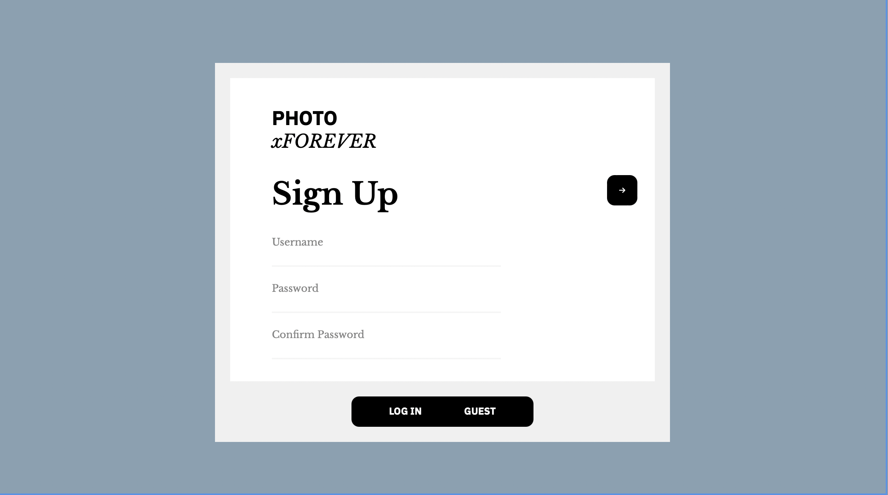
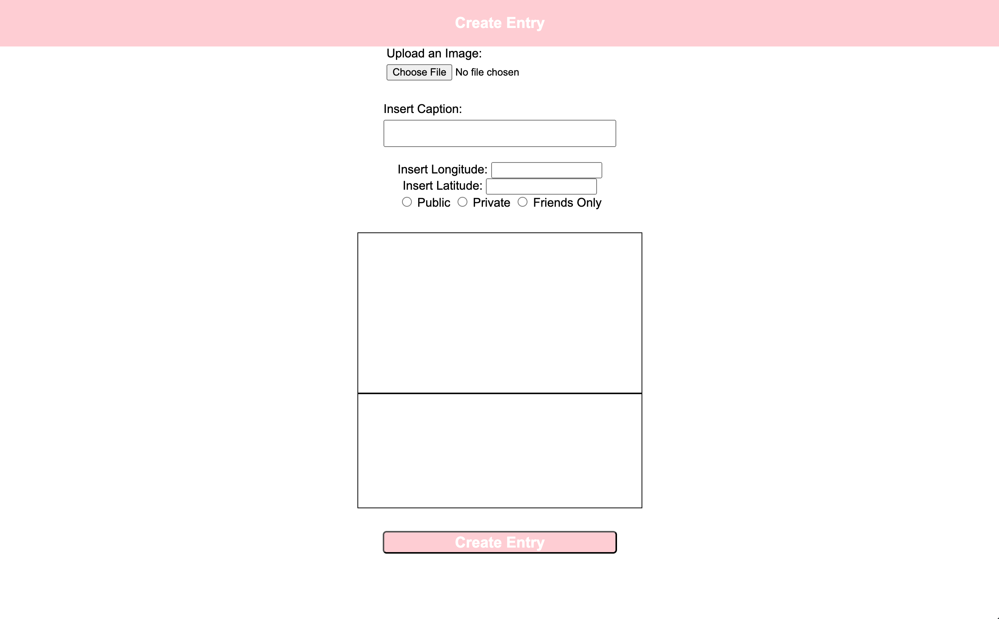

Photo Diary
Developed using Java, HTML/CSS, JavaScript, SQL, APIs, and various libraries



This project, completed as part of a collaborative final for CSCI 201, is a social media-style application where users can upload, share, and interact with photos within a virtual diary. Key features include geolocation tagging, interactive maps, and privacy controls. The project showcases my full-stack development skills, including:
- Backend: Implemented in Java using multithreaded servlets, allowing seamless interaction across multiple clients. MySQL stores user and post data, including secure login authentication and media (stored as BLOB).
- Frontend: Developed using HTML, CSS, and JavaScript, with map-based views integrated using Leaflet and OpenStreetMap APIs. Posts can be viewed, liked, and shared via a dynamic user interface.
- Data Structures: Used JSON arrays for handling multiple entries, lists for managing user friends, and relational databases to store posts and user information.
- Functionality: Features both guest and authenticated user modes, with authenticated users gaining access to additional capabilities like post creation, editing, and privacy controls. Guests can browse public entries only.
Project Highlights:
- Multithreading: The backend is powered by servlets, ensuring smooth performance even with multiple clients interacting with the platform concurrently.
- Networking: Hosted on a dynamic web project via Tomcat, capable of supporting multiple users across devices.
- Database Management: Utilized MySQL for robust data storage, including image handling via BLOBs and complex user relationship structures (friends, posts).
- Map Integration: Leveraged geolocation tools to create interactive maps where users can pin photos to specific locations, viewable by friends or the public depending on privacy settings.
- Collaboration: The project was developed using GitHub for version control, fostering efficient teamwork and code-sharing across multiple operating systems and environments.
By combining front-end and back-end development with modern APIs and SQL-based data management, this project demonstrates my ability to build scalable, user-friendly applications from concept to deployment.